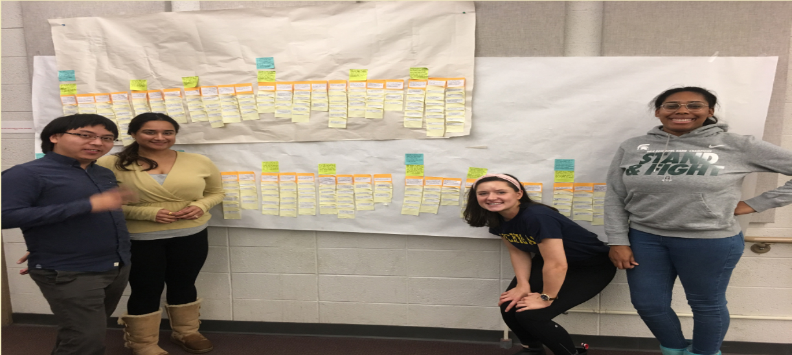

AFFINITY WALL
The Building Incident Response Team (BIRT) in the College of Pharmacy (CoP) at The University of Michigan is seeking a more efficient and reliable communication method in emergencies, particularly in a fire emergency. The current communication method in a fire emergency heavily relies on the safety manager as an information hub to collect and process all the information from BIRT members through text messages, which is both inefficient and invulnerable, especially when the safety manager is absent from the building. Nulli Secundus Consultants conducted a thorough study on the decentralized communication method during emergencies with a qualitative research method named contextual inquiry to both collect the qualitative data in current situations and to reveal potential solutions. This analysis process involves detailed background research on emergency management, six interviews with two building managers, two BIRT members, and two fire safety specialists. We finally used a qualitative analysis method named affinity diagramming to aggregate all the information and help us draw our conclusions and make recommendations.
Project Summary
Specifically, the BIRT liaisons wanted to use an interactive map feature all exit zones within the College of Pharmacy to call attention to specific areas in an emergency evacuation. However, after extensive background research, contextual interviews with staff members and College of Pharmacy faculty, synthesis of the collected information, and affinity wall construction, we found that a major barrier to entry for the interactive map would be cost, implementation and lack of effectiveness due to training constraints and funding. Final Presentation: For our final recommendation to the client, my team and I recommended that the College of Pharmacy BIRT employ a Group Messaging System- WhatsApp. Communication should be integrated through a shared platform that is reliable, easy to access, secure, and resilient. The entire BIRT should act in cohesion, and therefore different modes of communication are not recommended. Information needs to be shared in real-time so that rapid decision-making can occur during any serious emergency. We came to this decision based on our research and interviews that demonstrated. We delivered our recommendations and presentation to the College of Pharmacy who is now working on implementing the change in infrastructure over the coming year.

PDF Report